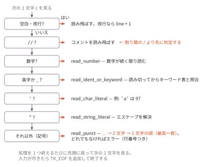

字句解析器を作る — ブラックボックスを開ける（前編）
今日のゴール
scaffold/lexer.py を読んで実際の字句解析器の構造を理解し、同じ仕様の字句解析器を自作する。
最後に、講義で使ってきた全テスト入力（約100本の .c ファイル）で、
自作 lexer のトークン列が スキャフォールド と完全一致することを golden test で確認する。
この回の位置づけ
| 項目 | 内容 |
|---|---|
| 必須の前提 | F0 |
| 推奨の前提 | — |
| 改変しない | mycc.py、scaffold/（scaffold/lexer.py は読解の対象であって、書き換えない） |
| 編集する | mylexer.py |
| 完了条件 | check.py の全 Step が PASS になり、golden.py が全テスト入力（約100本の .c）でスキャフォールドとのトークン列の完全一致を報告する |
| コマ数 | 1 |
| 備考 | フロントエンド発展シリーズの第1回。F0 の tokenize を Core プロファイルの C の字句仕様へ拡張する |
Core プロファイルのトークン
scaffold/lexer.py は、トークンを次の7種類に分類している。
| 種別 | 意味 | 値の入る場所 | 例 |
|---|---|---|---|
TK_NUM |
整数リテラル | val |
42 |
TK_CHAR |
文字リテラル | val（文字コード） |
'a' → 97 |
TK_STR |
文字列リテラル | sval（実体） |
"hi" |
TK_IDENT |
識別子 | sval |
main, x1 |
TK_KW |
キーワード | sval |
int, return |
TK_PUNCT |
演算子・区切り | sval |
+, <=, ; |
TK_EOF |
入力終端 | — | — |
トークンは Token dataclass で表され、kind / val / sval / line（行番号）を持つ。
たとえば if (x <= 42) は次のトークン列になる。
| トークン | kind | sval / val |
|---|---|---|
if |
TK_KW |
sval='if' |
( |
TK_PUNCT |
sval='(' |
x |
TK_IDENT |
sval='x' |
<= |
TK_PUNCT |
sval='<=' |
42 |
TK_NUM |
val=42 |
) |
TK_PUNCT |
sval=')' |
scaffold/lexer.py を読む
まず本物を読む。scaffold/lexer.py は約230行で、前処理器（preprocess）と
字句解析器（tokenize）の2つからなる。この回で読むのは tokenize 側である。
less ../../scaffold/lexer.py読解の手がかりとして、tokenize() の構造を対応表にしておく。
| 場所 | 内容 |
|---|---|
| 冒頭の定数 | キーワード表・2文字演算子表・1文字記号の集合 |
Token dataclass |
トークンの入れ物（kind / val / sval / line） |
while i < n: |
メインループ。1文字見て分岐する（F0 の tokenize と同じ骨格） |
| 空白・改行 | 読み飛ばす。改行で line を数える |
// |
行コメントを読み飛ばす（ブロックコメント /* */ は言語仕様にない） |
| 数字 | 続く限り読んで TK_NUM |
' と " |
文字・文字列リテラル。エスケープを解決する |
英字・_ |
続く限り読んで、キーワード表と照合 |
... → 2文字 → 1文字 |
記号。長い候補から試す |
| 最後 | TK_EOF を追加 |

分岐の順序に意味がある
この図の判定の並び順は、入れ替えられない。代表例が / である。
| 入力 | 正しい解釈 |
|---|---|
a / b |
割り算の TK_PUNCT |
// comment |
行コメント（トークンにしない） |
/ で始まる2つを区別するには、コメントの判定を記号の判定より先に行うしかない。
順序を逆にすると、// comment が「割り算・割り算・識別子 comment」に化けてしまう
（この言語のコメントは // のみで、/* */ ブロックコメントは仕様にない）。
記号どうしにも順序がある。<= を < と = に分けないために、
長い候補（... → 2文字 → 1文字）から試す。これは F0 で数字を読んだときと同じ
最長一致の原則である。
a-->b は何になるか。
最長一致で読むと a -- > b になる（-- は前置デクリメントとして
Core プロファイルにある。§「記号どうしにも順序がある」の最長一致原則どおり、
- - の2文字より先に -- が1トークンとして成立する）。
しかしこの言語の -- は前置専用なので、この後の構文解析（F3）では
「識別子 a の直後に前置 -- は来ない」という理由で構文エラーになる。
字句解析は正しく通っても構文解析で落ちる——字句と構文は別の関門だと分かる例である。
（本物の C では後置 -- もあるため a-- > b として意味を持つ。この違いは、
後置演算子を持たない Core プロファイルとの差である）。
キーワードは「読み切ってから」決める
if はキーワードだが、ifx は識別子である。
1文字ずつ見ながら「i の次が f だからキーワードだ」と早合点すると ifx を壊してしまう。
正しい手順は次の通り。
1. 英数字と _ が続く限り読み切る(最長一致)
2. 読んだ単語がキーワード表(KEYWORDS)にあれば TK_KW、なければ TK_IDENT「まず貪欲に読み、あとで分類する」— これも最長一致の応用である。
リテラルとエスケープ
文字リテラル 'a' は、文字コードを値に持つ TK_CHAR になる（val=97）。
コマ10 で見たとおり、C では文字は小さな整数だからである。
エスケープは表引きで文字コードに変換する。
| 書き方 | 文字コード | 意味 |
|---|---|---|
'\n' |
10 | 改行 |
'\t' |
9 | タブ |
'\0' |
0 | NUL |
'\\' |
92 | バックスラッシュ |
'\'' / '\"' |
39 / 34 | 引用符 |
文字列リテラル "x=%d\n" は、エスケープを解決した実体を sval に持つ。
sval の中身は6文字（x = % d 改行）であり、ソース上の \ と n の2文字は
この時点で1文字に畳まれている。コマ10 の .data 出力で .byte 10 を出せたのは、
Lexer がここで変換を済ませていたからである。
行番号 — エラー報告の生命線
Token の line は、エラーメッセージの「main.c:12:」の材料になる。
改行を数える場所は1箇所ではない。
| 改行が現れうる場所 | 数える処理 |
|---|---|
| トークンの間の空白 | skip_whitespace |
| ブロックコメントの中 | skip_comment |
| 文字列リテラルの中 | read_string_literal |
どれか1つでも数え忘れると、それ以降の全トークンの行番号がずれる。 golden test は行番号まで比較するので、ずれがあれば検出できる。
実装
mylexer.py のスケルトンは Lexer クラスになっている。
メインループ（ディスパッチ）と共通部品（error / startswith / add / escape_char）は
完成済みで、読み取りメソッド7つが TODO である。
| Step | 実装対象 | 内容 |
|---|---|---|
| 1 | skip_whitespace / skip_comment / read_number |
空白・コメント・数。F0 の tokenize + コメント |
| 2 | read_ident_or_keyword |
読み切ってからキーワード表と照合 |
| 3 | read_punct |
... → 2文字 → 1文字の順に試す |
| 4 | read_char_literal / read_string_literal |
エスケープの解決 |
| 5 | （新規実装なし） | 行番号の総点検。Step 1〜4 の数え漏れを直す |
各メソッドの方針は docstring に書いてある。
スキャフォールド との違いは1点だけ: エラーは exit ではなく SyntaxError 例外にしている
（テストしやすくするため）。
途中経過は main() で目視できる。
python3 mylexer.py ../../sessions/02_arithmetic_codegen/tests/add.cテスト
単体テスト（Step ごと）
python3 check.pyStep 1〜4 は (kind, val, sval) を比べ、Step 5 で行番号まで比べる。
未実装の Step は SKIP と表示される。
golden test（スキャフォールド との突き合わせ）
python3 golden.pysessions/*/tests/*.c と final/tests/*.c の全ファイル（約100本）について、
スキャフォールド と自作 lexer のトークン列を (kind, val, sval, line) で完全比較する。
#include / #define を含むファイルは、スキャフォールド の preprocess を両者に通して
条件を揃えてある（前処理は F1 の対象外）。
全ファイル PASS がこの回の完了条件である。 これが通れば、講義で使ってきたブラックボックスの前半分は、もうブラックボックスではない。
golden test という考え方。 「正しい出力を人手で書く」代わりに「信頼できる既存実装と突き合わせる」テスト手法を golden test（または差分テスト）という。仕様書を書くより安く、テストケースは 既存の入力を流用できる。コンパイラ開発では、gcc と自作コンパイラの実行結果を 突き合わせる形でも使われる（セルフホスト検証もこの発想である）。
発展課題
- 仕様にない
/* */を試しに実装する:skip_commentを拡張して ブロックコメントも読み飛ばせるようにしてみる。動いたら元に戻し、language_spec.mdがなぜ//行コメントだけに絞ったのか （終端し忘れ・ネスト不可などの事故りやすさ）を考える - エラーメッセージの改善: 該当行のテキストを表示し、問題の位置に
^を付ける - 16進リテラル:
0x2aを読めるように拡張する（スキャフォールド にない拡張なので、 golden test は対象外にして単体テストで確認する） - 計測: 一番大きいテスト入力で スキャフォールド と自作版の実行時間を比べる
コラム: 手書きループは DFA である。
「今どの状態にいて、次の1文字で何をするか」だけで動くこの種のループは、
理論的には決定性有限オートマトン（DFA）と等価である。
トークンの形（識別子・数・記号）が正規言語で書けるからこそ、
先読みほぼなしの一直線のループで字句解析ができる。
flex などの lexer 生成系は、正規表現から DFA を自動生成してこのループを作っている。
手書きした今なら、生成系が何を自動化しているのかが分かるはずである。
次回予告
トークン列は手に入った。次の F2 では、いよいよ再帰下降構文解析に入る。
F0 の CYK 法は「どんな文法でも O(n³)」だったが、再帰下降は
文法の各規則を1つの関数に対応させ、先読み1トークンで一直線に木を組み立てる。
language_spec.md の EBNF がそのまま関数の設計図になる。
まず式（優先順位10段）から始める。